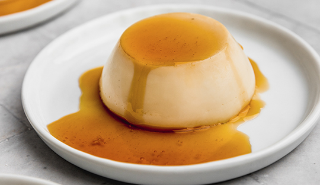

Panacota de caramelo

La panna cotta (en italiano literalmente 'nata cocida') es un postre típico
de la región italiana del Piamonte, elaborado a partir de crema de leche o nata,
azúcar y gelificantes, que se suele adornar con mermeladas de frutas rojas.
Recuerda al flan, pero su sabor es más lácteo con una textura más suave que el flan.
Proviene de la receta francesa del fromage bavarois codificada en el siglo 18 por
Marie-Antoine Carême. En la versión francesa una parte de la nata se monta en chantilly
antes de agregar la gelatina.
En su preparación se utiliza nata, azúcar y gelatina y se le añaden fresas, moras y en ocasiones,
jarabe de caramelo, vainilla, ron, etc.
Ingredientes
- 10 g Gelatina en hoja
- 250 mL Crema de leche
- 300 mL Leche
- 100 g Azucar rubia
- 1/2 Cucharadita esenc de caramelo
- 6 Cucharadas de azucar
- 6 Cucharadas de agua calientes
Pasos de preparacion
Preparacion de la panacota
- Hidratar la gelatina en un bowl con abundante agua fría por 10 minutos. Asegurarse que
quede totalmente sumergida.
- En una olla pequeña, calentar la leche, crema, azúcar y esencia de caramelo hasta que
bote vapor.
- Retirar del fuego y agregar la gelatina previamente escurrida. Mezclar con un batidor
de mano para disolver.
- Verter dentro de moldes de silicona y esperar a que enfríen. Una vez fríos refrigerar
por 8 horas.
- Para desmoldar, insertar el exterior del molde en un bowl con agua tibia y esperar a
que se suelten los bordes con el calor ligero. Desmoldar sobre el plato de la presentación.
Preparacion del berlin
- En una sartén, esparcir el azúcar en una capa plana. Poner a fuego medio y esperar a que
comience a derretirse.
- Cuando se comience a derretir, bajar la temperatura un poco. A medida que se derrite y
se empieza a dorar, se puede mezclar usando el mango de la sartén mas no insertando un utensilio.
- Una vez que tenga un color dorado parejo y esté derretido, agregar el agua con cuidado y mezclar
vigorosamente con un batidor de mano. Cuando se haya disuelto bien el caramelo, retirar la salsa de la sartén
y dejar enfriar por completo. Al enfriar espesa más.
- Servir la panna cotta con la salsa de caramelo.
Volver al menu de recetas